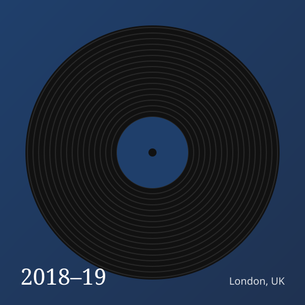

The first song a British court punished someone for performing

In August 2018 the Metropolitan Police obtained a gang injunction that barred the drill duo Skengdo x AM from performing certain music. In December they performed their song "Attempted 1.0" at a concert in Camden. In January 2019 a court gave them nine months each, suspended for two years. It was widely called the first prison sentence in British history for performing a song.
The injunction was lifted in 2021. Whatever one thinks of the lyrics, it is a modern case of a state deciding a song is a weapon, like the ban on Zaghloul's name in 1919.